Slide 1
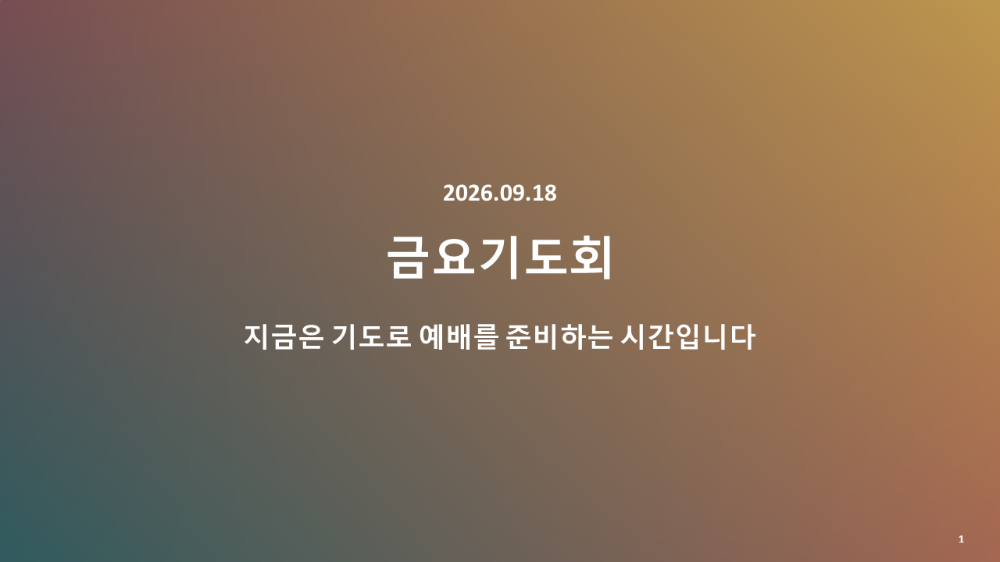
Extracted text
2026.09.18 금요기도회 지금은 기도로 예배를 준비하는 시간입니다 1
Slide 2
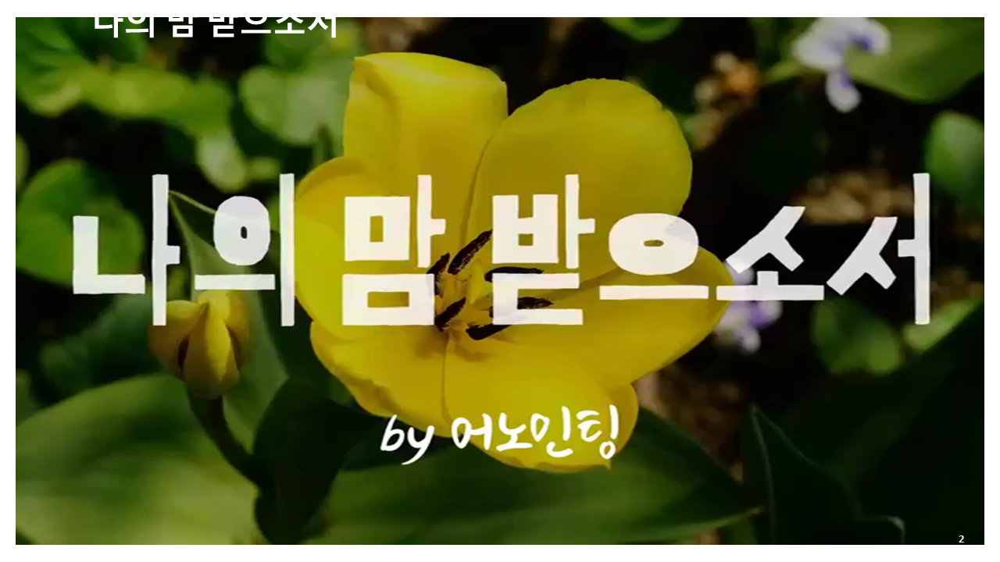
Extracted text
나의 맘 받으소서 2
Slide 3
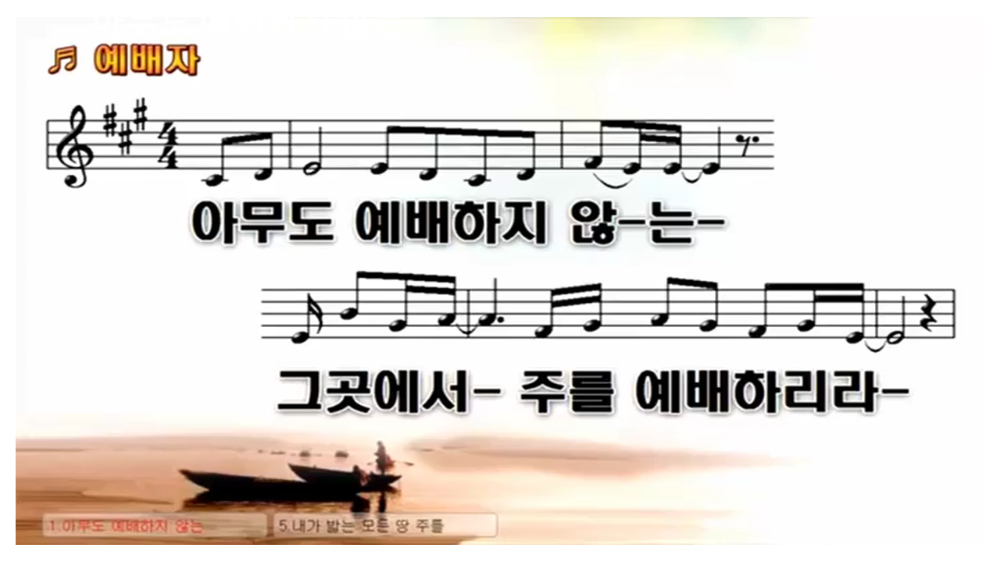
Extracted text
아무도 예배하지 않는 3
Slide 4
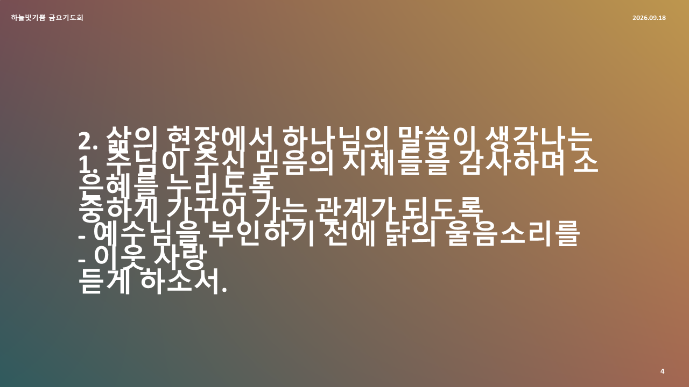
Extracted text
1. 주님이 주신 믿음의 지체들을 감사하며 소중하게 가꾸어 가는 관계가 되도록 - 이웃 사랑 2. 삶의 현장에서 하나님의 말씀이 생각나는 은혜를 누리도록 - 예수님을 부인하기 전에 닭의 울음소리를 듣게 하소서. 하늘빛기쁨 금요기도회 2026.09.18 4
Slide 5
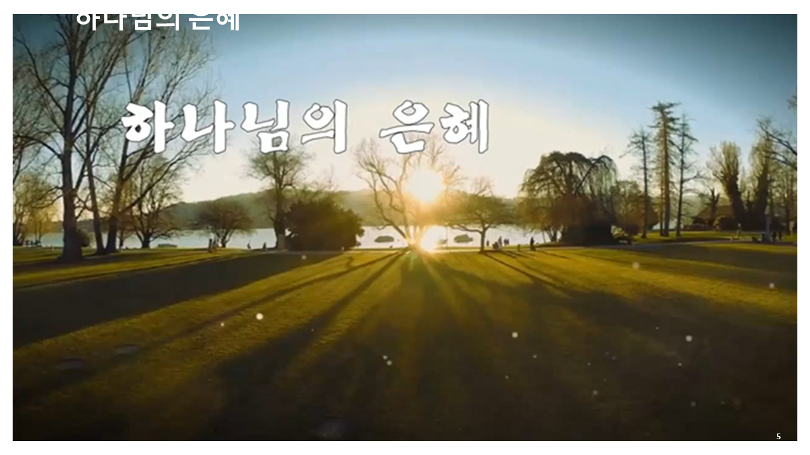
Extracted text
하나님의 은혜 5
Slide 6
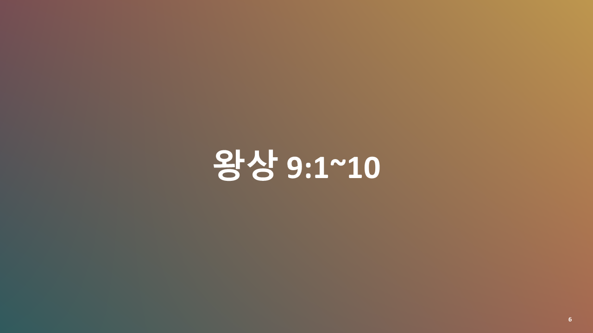
Extracted text
왕상 9:1~10 6
Slide 7
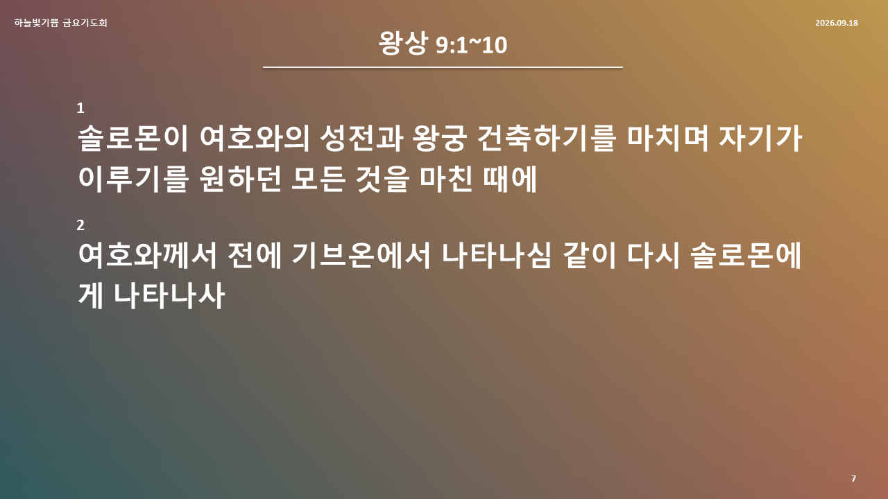
Extracted text
왕상 9:1~10 1 솔로몬이 여호와의 성전과 왕궁 건축하기를 마치며 자기가 이루기를 원하던 모든 것을 마친 때에 2 여호와께서 전에 기브온에서 나타나심 같이 다시 솔로몬에게 나타나사 하늘빛기쁨 금요기도회 2026.09.18 7
Slide 8
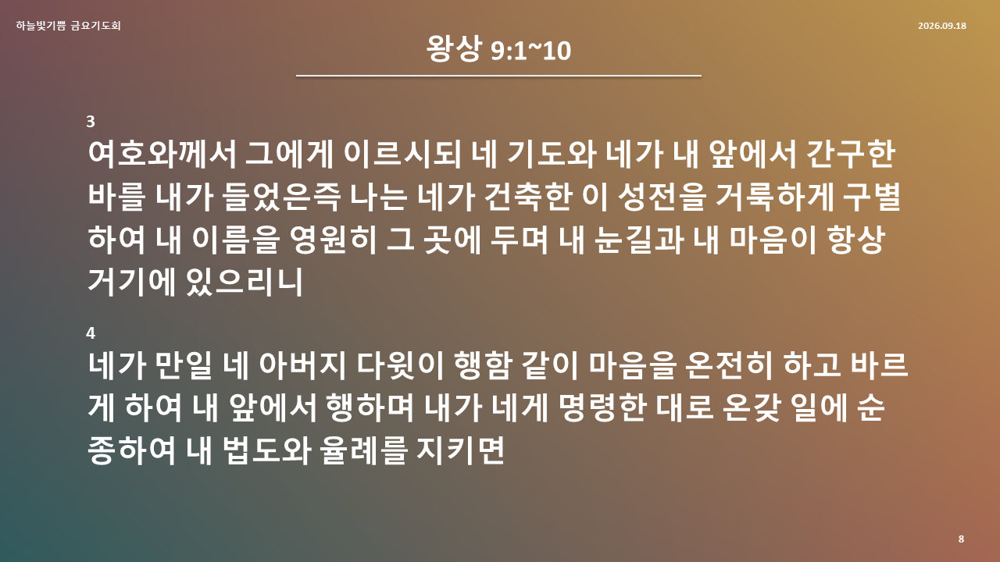
Extracted text
왕상 9:1~10 3 여호와께서 그에게 이르시되 네 기도와 네가 내 앞에서 간구한 바를 내가 들었은즉 나는 네가 건축한 이 성전을 거룩하게 구별하여 내 이름을 영원히 그 곳에 두며 내 눈길과 내 마음이 항상 거기에 있으리니 4 네가 만일 네 아버지 다윗이 행함 같이 마음을 온전히 하고 바르게 하여 내 앞에서 행하며 내가 네게 명령한 대로 온갖 일에 순종하여 내 법도와 율례를 지키면 하늘빛기쁨 금요기도회 2026.09.18 8
Slide 9
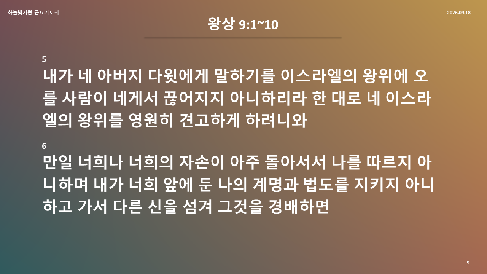
Extracted text
왕상 9:1~10 5 내가 네 아버지 다윗에게 말하기를 이스라엘의 왕위에 오를 사람이 네게서 끊어지지 아니하리라 한 대로 네 이스라엘의 왕위를 영원히 견고하게 하려니와 6 만일 너희나 너희의 자손이 아주 돌아서서 나를 따르지 아니하며 내가 너희 앞에 둔 나의 계명과 법도를 지키지 아니하고 가서 다른 신을 섬겨 그것을 경배하면 하늘빛기쁨 금요기도회 2026.09.18 9
Slide 10
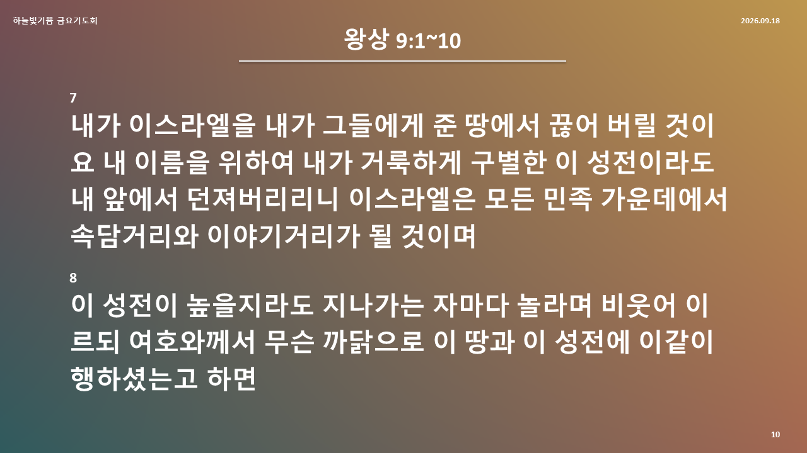
Extracted text
왕상 9:1~10 7 내가 이스라엘을 내가 그들에게 준 땅에서 끊어 버릴 것이요 내 이름을 위하여 내가 거룩하게 구별한 이 성전이라도 내 앞에서 던져버리리니 이스라엘은 모든 민족 가운데에서 속담거리와 이야기거리가 될 것이며 8 이 성전이 높을지라도 지나가는 자마다 놀라며 비웃어 이르되 여호와께서 무슨 까닭으로 이 땅과 이 성전에 이같이 행하셨는고 하면 하늘빛기쁨 금요기도회 2026.09.18 10
Slide 11
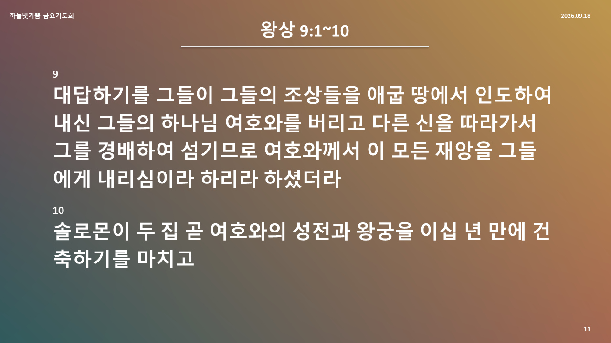
Extracted text
왕상 9:1~10 9 대답하기를 그들이 그들의 조상들을 애굽 땅에서 인도하여 내신 그들의 하나님 여호와를 버리고 다른 신을 따라가서 그를 경배하여 섬기므로 여호와께서 이 모든 재앙을 그들에게 내리심이라 하리라 하셨더라 10 솔로몬이 두 집 곧 여호와의 성전과 왕궁을 이십 년 만에 건축하기를 마치고 하늘빛기쁨 금요기도회 2026.09.18 11
Slide 12
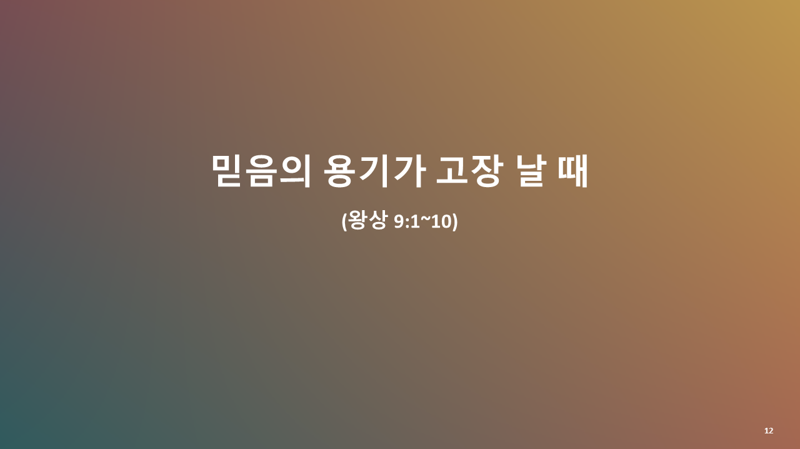
Extracted text
믿음의 용기가 고장 날 때 (왕상 9:1~10) 12
Slide 13
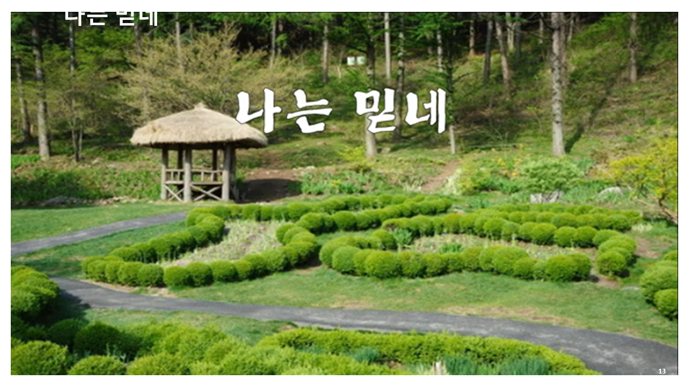
Extracted text
나는 믿네 13
Slide 14
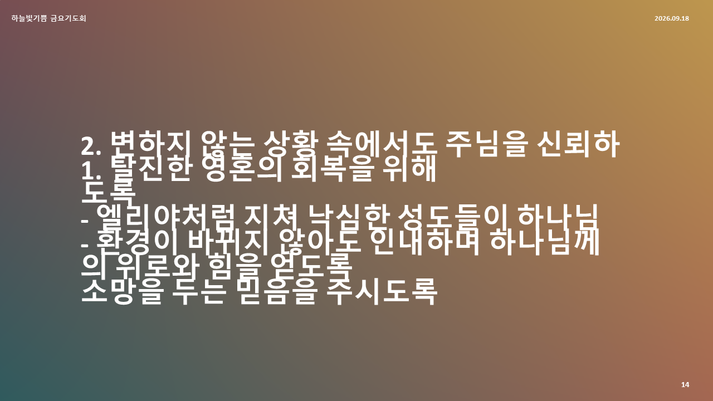
Extracted text
1. 탈진한 영혼의 회복을 위해 - 엘리야처럼 지쳐 낙심한 성도들이 하나님의 위로와 힘을 얻도록 2. 변하지 않는 상황 속에서도 주님을 신뢰하도록 - 환경이 바뀌지 않아도 인내하며 하나님께 소망을 두는 믿음을 주시도록 하늘빛기쁨 금요기도회 2026.09.18 14
Slide 15
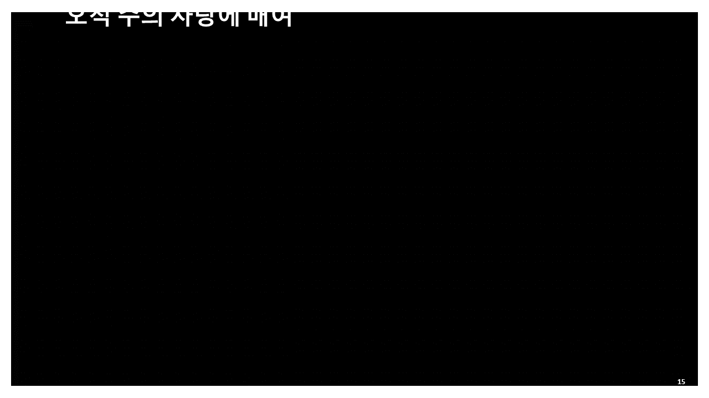
Extracted text
오직 주의 사랑에 매여 15
Slide 16
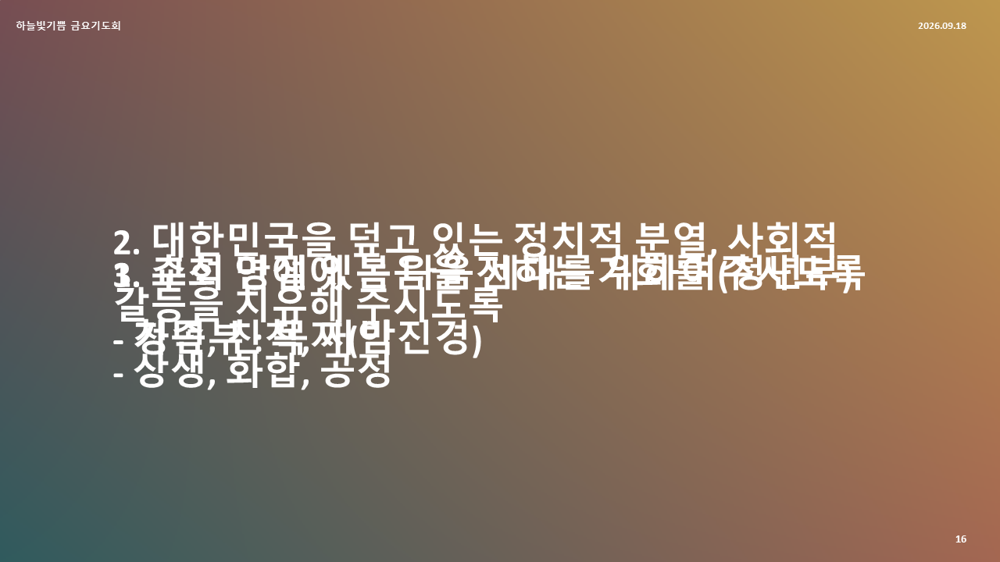
Extracted text
1. 교회 안에 있는 다음 세대를 위하여(청년부) - 청년부 : 목자(박진경) 2. 대한민국을 덮고 있는 정치적 분열, 사회적 갈등을 치유해 주시도록 - 상생, 화합, 공정 3. 추석 명절에 복음을 전하는 기회를 주시도록 - 가족, 친척, 지인 하늘빛기쁨 금요기도회 2026.09.18 16
Slide 17
Extracted text
지금은 개인 기도 시간입니다. 더 깊은 주님과의 친밀함 가운데 나아가시기 바랍니다. 17